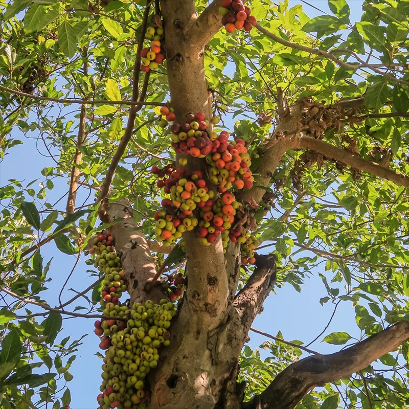

Scientific Name: Ficus carica
Common Names: Fig, Common Fig
Family: Moraceae
Native Region: Mediterranean and Western Asia
Plant Type: Small deciduous tree
Fruit Color: Green, purple, or black
Uses: Fruit consumption, desserts, jams, dried fruit, traditional medicine
Details: The Fig tree is well known for producing sweet and nutritious fruits that are enjoyed fresh or dried. Figs have soft flesh, tiny edible seeds, and a naturally sweet taste.
Fig fruits are rich in fiber, vitamins, minerals, and antioxidants, making them beneficial for digestion and overall health. They are often used in salads, desserts, cakes, and health snacks.
The Fig tree grows best in warm climates with plenty of sunlight. It has broad leaves and can survive in dry conditions once established.
In many cultures, figs symbolize prosperity, abundance, and peace. The fruit has been cultivated for thousands of years and is considered one of the oldest cultivated fruits in history.